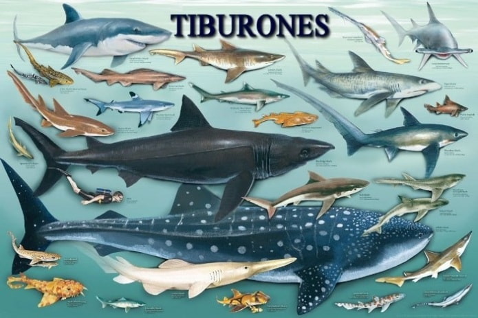
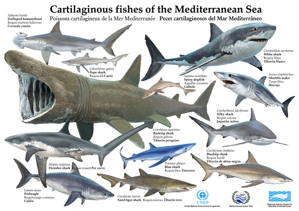
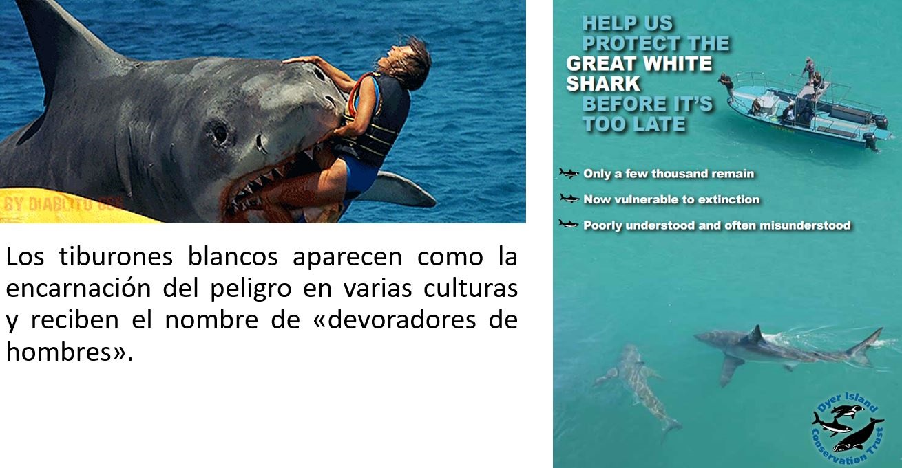

HISTORIA
Es el verano de 1975 y hasta alimentar a un inocente pez dorado en una pecera parece ser una tarea osada y peligrosa. Se puede percibir la tensión en la orilla del mar, mientras suena una tonada machacona que desencadena el miedo. "Dum dum, dum dum dum dum..." La banda sonora de "Tiburón" ("Jaws"). Hace exactamente 40 años esa película de Steven Spielberg marcó un hito en la historia del cine. Salas de cine en todo el mundo mantenían a los espectadores aferrados a sus sillas mientras exhibían al enorme tiburón blanco que se acercaba con mala actitud a la playa más cercana. "Esa película fue un punto de inflexión sobre la percepción que se tenía del gran tiburón blanco", le dijo a la BBC Oliver Crimmen, quien fue curador del Museo de Historia Natural de Londres durante 40 años. "Yo comencé a notar ese gran cambio cuando se publicó el libro de Peter Benchley en 1974 y después cuando se hizo la película (basada en el libro)", añadió. Pero el problema, dicen científicos y biólogos, es que la película retrató injustamente a estos animales como criaturas vengativas.
¿Seres vengativos?
La historia de la película se centra en un tiburón que persigue a un grupo de bañistas con la intención de matarlos. El libro que inspiró la obra de Spielberg está vagamente basado en un incidente de 1916, cuando un gran tiburón blanco atacó a varios nadadores en la costa de Nueva Jersey. "Después de que se estrenó la película, miles de personas salieron en barcos a cazar tiburones para tenerlos como trofeos en sus botes", le dijo a la BBC George Burgess, director del Programa de Protección del Tiburón en Florida, EE.UU.
"Fue una pesca popular. No necesitabas tener un barco elegante. Cualquier barcaza que soportara un pez grande. Y no había remordimientos porque estaba la idea de que esos animales eran asesinos". El autor de "Tiburón", Peter Benchley, quedó bastante perturbado por este hecho.
EL TIBURÓN
Viven desde antes de que los vertebrados terrestres poblaran la tierra e incluso antes de que muchas plantas se desarrollaran en los continentes. Mientras que los tiburones antiguos eran muy diferentes a estos que tenemos ahora, las especies actuales que conocemos han estado ahí desde hace 100 millones de años. Esto significa que estaban ahí cuando los dinosaurios rondaban la tierra. Una criatura rompedora de este record evolucionario, no puede ser otra cosa que extraordinaria, con una anatomía que ha ido mejorándose a lo largo de esos millones de años de evolución.
Existen más de 465 especies conocidas de tiburones que viven en nuestros océanos, estos peces constituyen depredadores ápices en o cerca de la parte superior de sus cadenas alimentarias marinas, y regulan las poblaciones de las especies por debajo de ellos. Las investigaciones han demostrado que el agotamiento masivo de los tiburones tiene efectos en cascada en todo los ecosistemas del océano.
